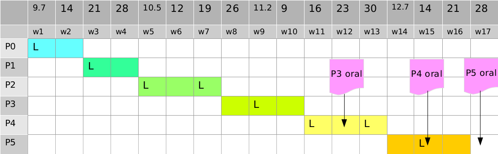

Operating System Labs
Dept. of Computer Science, ECNU, Fall 2015
Basic
Time and Venu
- Lectures: Monday 1:00pm - 2:30pm @ 4-302 (odd weeks)
- Labs: Monday 3:00pm - 4:30pm @ 313, 317 Laboratory Building A
Stuff
Instructor: Yuanbin Wu
Email: ybwu[at]cs.ecnu.edu.cn
Office: 610 Information Building
TA1: Chengchao Huang
Email: ecnucchuang[at]163.com
Projects
Topics
Lecture Slides
Timeline (tentative)

Plagiarism Policy
ALL participants will loss ALL credits of the project if any improper code/doc sharing is discovered.
Late Policy
- For P0, P1, P2, late handins are NOT accepted.
- For P3, P4, P5:
- Your group will have 3 “late days”.
- You need to email TA at least 1 hour before the dateline.
- If all your 3 “late days” are used, late handins will not be accepted.
Readings
Main
Unix Programming
- Advanced Programming in the UNIX Environment,
W. Richard Stevens, Stephen A. Rago
C Programming
- The C Programming Language,
Brian W Kernighan, Dennis M. Ritchie
Linux Kernel
- Linux Kernel Development,
Robert Love